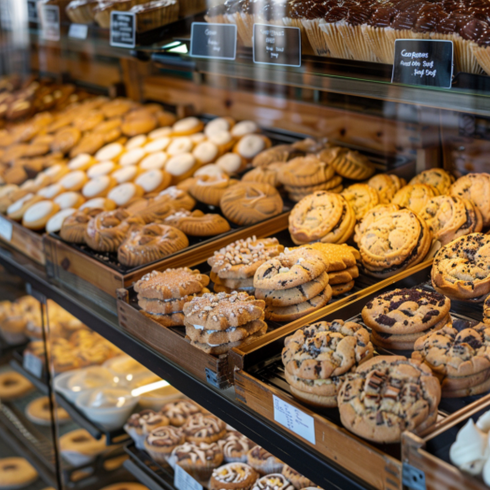

Fresh bread
Hand-shaped loaves baked throughout the week.
Fresh bakes.
Brighter days. ♡
Fresh bread. Brighter days.
North Star Bakery makes fresh bread, pastries, and cakes for the neighborhood. Small batches, familiar favorites, and a place that feels easy to stop by.
A look behind the scenes ↘
What we're known for
From crusty breads to buttery pastries, we make the kinds of baked goods that bring people together. Stop in for something simple, or place an order ahead if you need a little more.
Hand-shaped loaves baked throughout the week.
Croissants, buns, and seasonal treats.
For birthdays, family events, and small gatherings.

Real ingredients.
Happier neighbors. ♡
Come for the baked goods.
Stay for the community. ♡
Location
Neighborhood Center
Hours
Monday-Friday: 6:30 a.m.-6:00 p.m.
Saturday: 7:00 a.m.-4:00 p.m.
Sunday: 8:00 a.m.-2:00 p.m.